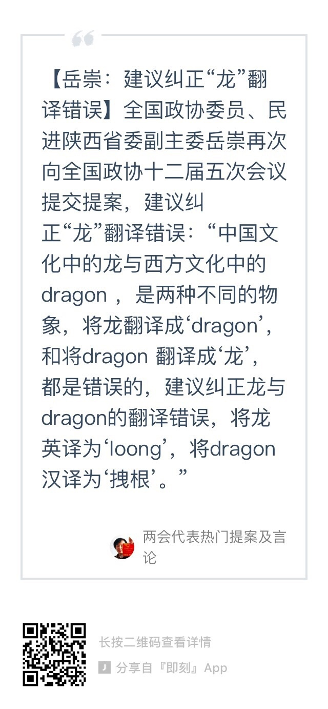

拽根…… //@Apache9:???//@henryma_t: ？？？//@NoPingWest:？？？？？？？？？@即刻:【岳崇：建议纠正“龙”翻译错误】全国政协委员、民进陕西省委副主委岳崇再次建议纠正“龙”翻译错误：“中国龙与西方的dragon是不同的物象，将龙翻译成‘dragon’和将dragon 翻译成‘龙’，都是错误的，建议将龙英译为‘loong’，将dragon汉译为‘拽根’。”#两会代表热门提案及言论# 
如果2016的主题是爆冷的话，2017的主题到现在看来就是逆转：奥斯卡最佳影片小金人拿到手里获奖感言都说完了，还能换人的；今天巴塞罗那足球队到87分钟了还得进三个球才能免于淘汰，竟然做到了。所以2017，所有人都应该永不言败，永不放弃，也永不松懈。
从朝鲜的角度来看，这么多核武器和导弹试射，它的战略目的达到了吗？美国依然没有承认朝鲜为有核国家，美国韩国没有因此走上谈判桌或者做任何让步，贸易制裁没有减少反而增加。朝鲜也没有因此变得更安全。如果我是个理性的朝鲜战略专家，我会认为这些年的战略全都是失败的。
我现在开始相信有一些美国战略专家说的了：中国没有战略，只有反战略。导弹防御系统，无论多重要，都是战术层面的。随意让一个战术上的挑战影响谁是我们的朋友，谁是我们敌人这样的战略问题，无论战术上赢多少，最后都是输，因为你自己根本没想清楚你想要什么，没定义清楚什么叫赢。